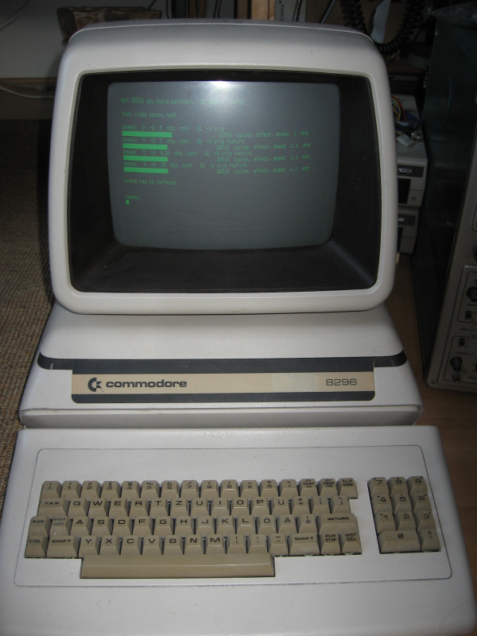
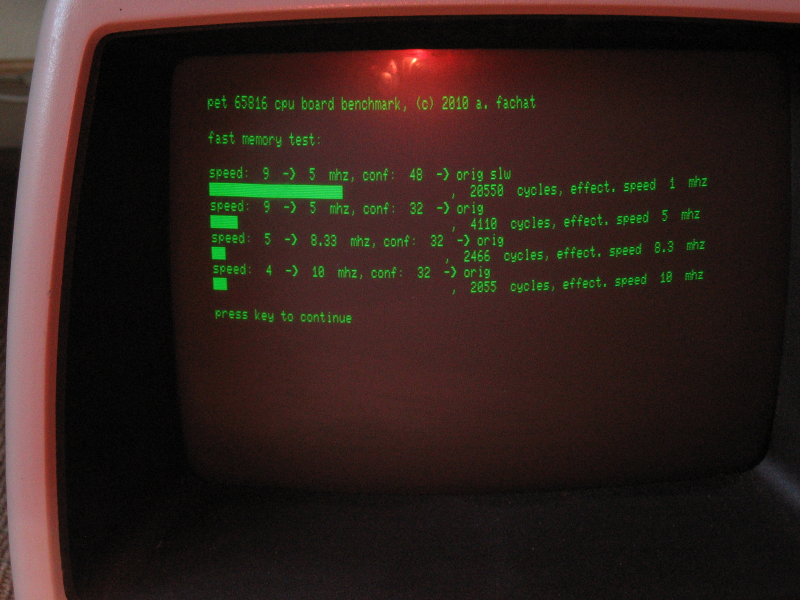

PET816 Gallery
(C) 2010-2010 André Fachat
On this page I have put some pictures of the board and the benchmarks I did with the board.
Gallery

The Commodore 8296 test system
The board installed into the 8296. The white connector at the left upper end of the board is an additional power connector, going to the tape port

The board installed into the 8296. Here you see the additional power cable going out of the case and to the C2N232 connector I reused to get the power ...

The benchmark determines the system speed using the screen sync frequency.

Yeah! The system runs at 10 MHz!
Each benchmark has two lines. The first line shows the configuration for the clock register ("speed"), and control register ("conf"), plus it names the actual bits that are set for convenience. The second line shows the benchmark result in terms of system cycles for the benchmark loop, and the speed calculated from that.

For certain workloads quite some speedup can be obtained by hiding bogus cycles

As there is only one screen read cycle per benchmark loop, not much of a speedup is expected, as shown. But other workloads may differ, esp. when they already run in fast RAM
Return to Homepage